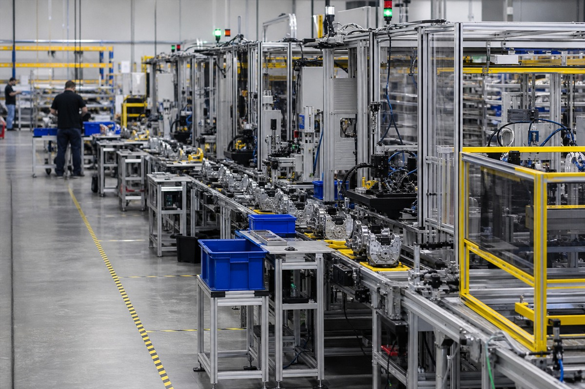
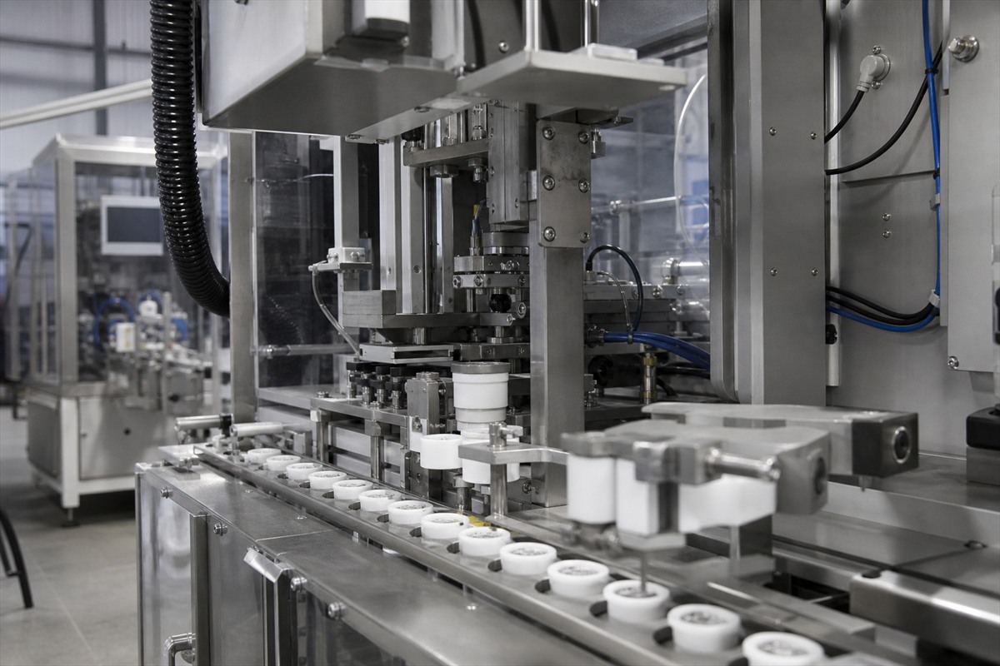
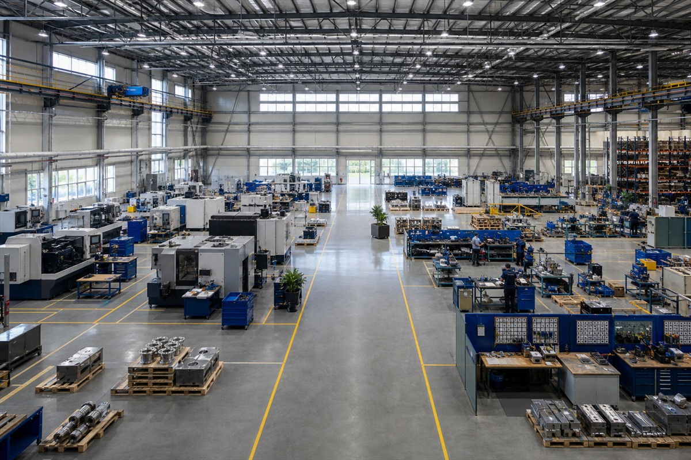
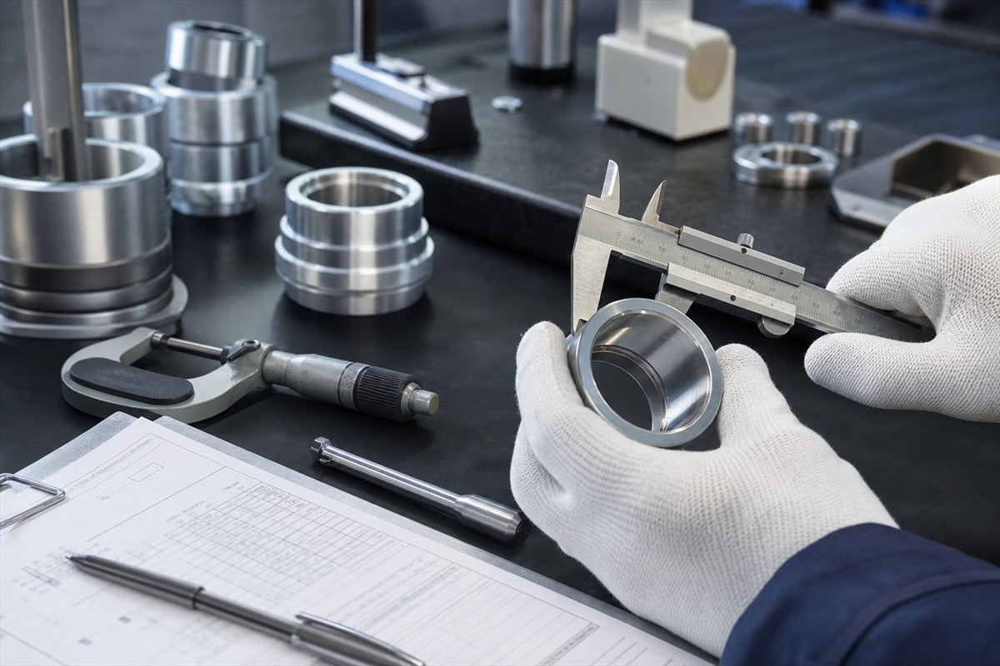

No te entregamos un informe y nos vamos: cada servicio se entrega con nuestra metodología y dejamos SIO funcionando para sostener y medir los resultados.
Diagnóstico, implementación y un sistema que sostiene los resultados en el tiempo. Operaciones · Procesos · Calidad.
"Sé que pierdo tiempo y dinero, pero no sé exactamente dónde."
"Mis procesos dependen de las personas, no de un estándar."
"Mi calidad es inconsistente y reacciono tarde a los problemas."
"Mi planta o mi flujo de trabajo es un desorden."
"Quiero certificarme en ISO 9001 y no sé por dónde empezar."
"Crecí rápido y mi operación no da abasto."
Si te suena familiar, estás en el lugar correcto.
Elige el área donde más te duele. Explora cada servicio para ver cómo intervenimos.
Visitamos tu empresa, mapeamos tus procesos e identificamos oportunidades reales. Es la base de toda intervención.
A partir de ahí, intervenimos en tres familias de servicio.

Lean Six Sigma · estandarización · VSM · 5S · Kaizen · DMAIC
Ver detalle →Formación en Lean, Six Sigma e ISO para tu equipo in-company.
Ver detalle →
Planificación · balanceo · métodos y tiempos · OEE
Ver detalle →
Layout óptimo · flujo de materiales · modelado 3D
Ver detalle →Cadena de suministro · compras · ventas · distribución
Ver detalle →Control · stock · almacén · mermas · clasificación ABC
Ver detalle →
Implementación del SGC, preparación para certificación, auditorías internas y documentación con evidencia auditable.
Ver las dos partes →Implementamos la mejora y la dejamos sostenida con SIO, nuestro sistema inteligente operativo. No vuelves al caos cuando nos vamos: tu empresa queda con la herramienta para mantener y medir los resultados. Ninguna consultora local te da eso.
Visitamos, escuchamos, medimos. Identificamos oportunidades reales con datos.
Plan a tu medida: alcance, tiempos y resultados esperados antes de comprometerte.
Ejecutamos contigo, en sitio, con método. No te dejamos solo con un informe.
Dejamos SIO funcionando y te acompañamos para sostener la mejora en el tiempo.
En J&Co trabajamos con ingenieros industriales formados en Lean Six Sigma Black Belt y especializados en ISO 9001. Método, rigor y evidencia en cada proyecto.
Visión sistémica, datos y decisiones fundamentadas en cada análisis operativo.
El estándar de nuestros ingenieros: eliminar desperdicio y reducir variación con método.
SGC con evidencia auditable, listos para certificación desde el primer día.
Sin importar tu industria, si tiene procesos, podemos mejorarlo.
Reducción en tiempos de proceso tras mapeo y estandarización de línea.
Mejora en eficiencia OEE con balanceo de líneas y control de métodos y tiempos.
Sistema de gestión de calidad implementado y preparado para certificación.
Casos anonimizados, presentados como escenarios reales de intervención.
Una estimación transparente. La conversación inicial es gratuita; el diagnóstico es el primer servicio pagado.
Cuéntanos sobre tu operación. La conversación inicial es gratuita y sin compromiso.